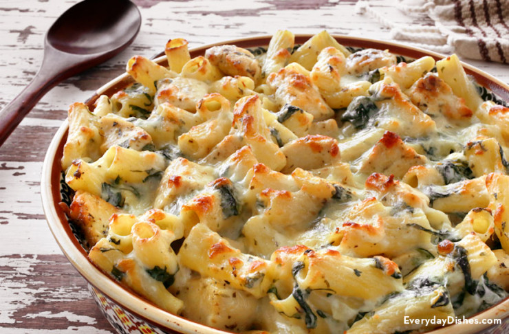

Creamy Chicken, Tomato, Mozzerella and Spinach Pasta Bake
Ingredients
- Pasta shells large ( 200g )
- chicken breast or thigh ( 500g )
- Pasta Bake Creamy Tomato and Mozzerella ( 1 jar )
- grated cheddar cheese ( 1 cup )
- English Spinach ( 200g )
- fresh basil leaves ( 100g )
Instructions
- Preheat oven to 180°C.
- Cook 200g of dry pasta following packet instructions.
- Fry 500g of diced chicken breast in a pan until brown.
- Combine cooked pasta, chicken and Creamy Tomato and Mozzarella Sauce into a baking dish. Cover with 1 cup of grated cheese and spinach.
- Bake for 20 minutes or until golden brown and garnish with fresh basil.
Calories: 890
